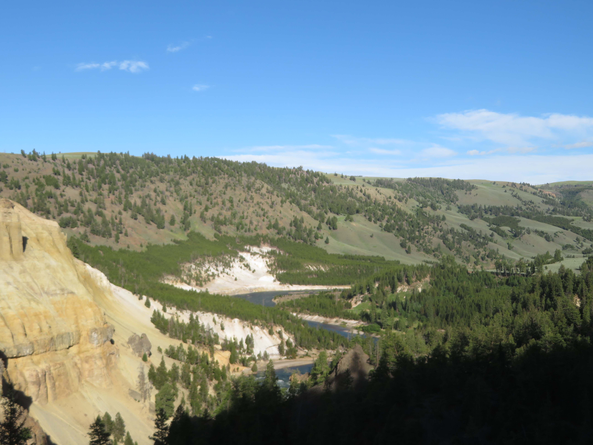
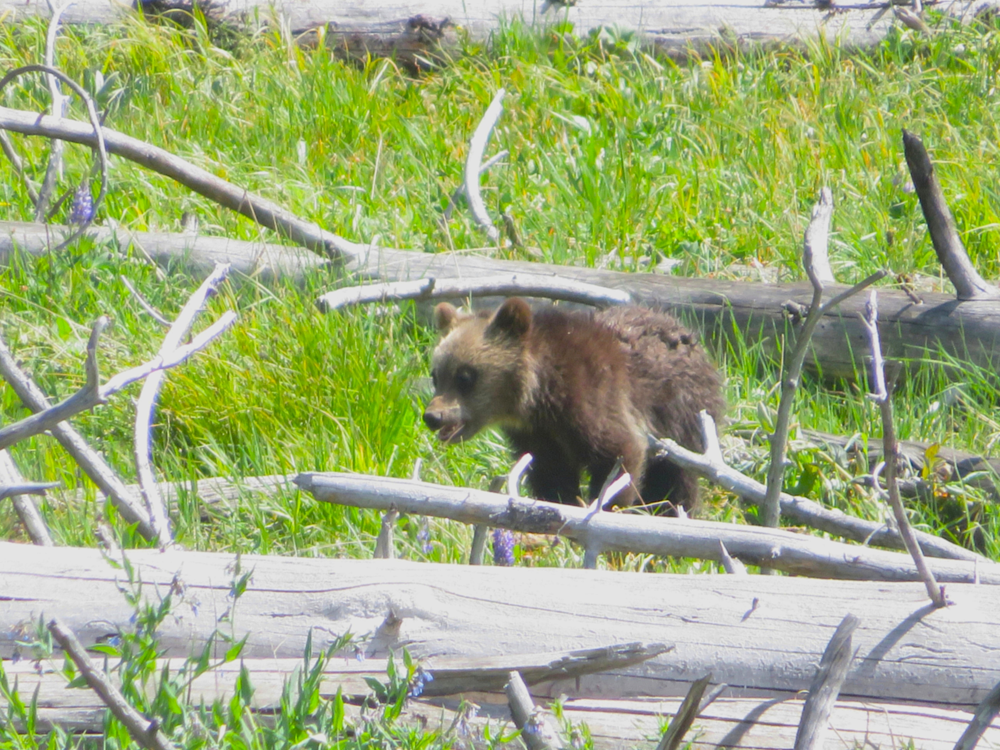
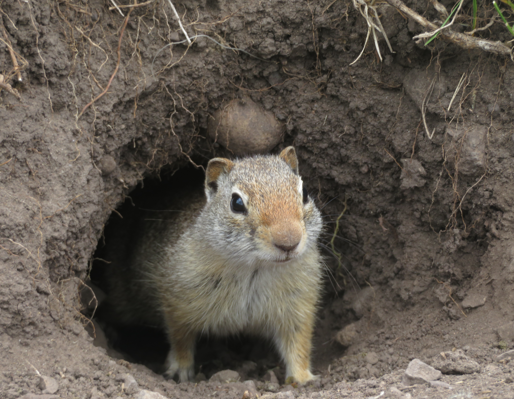
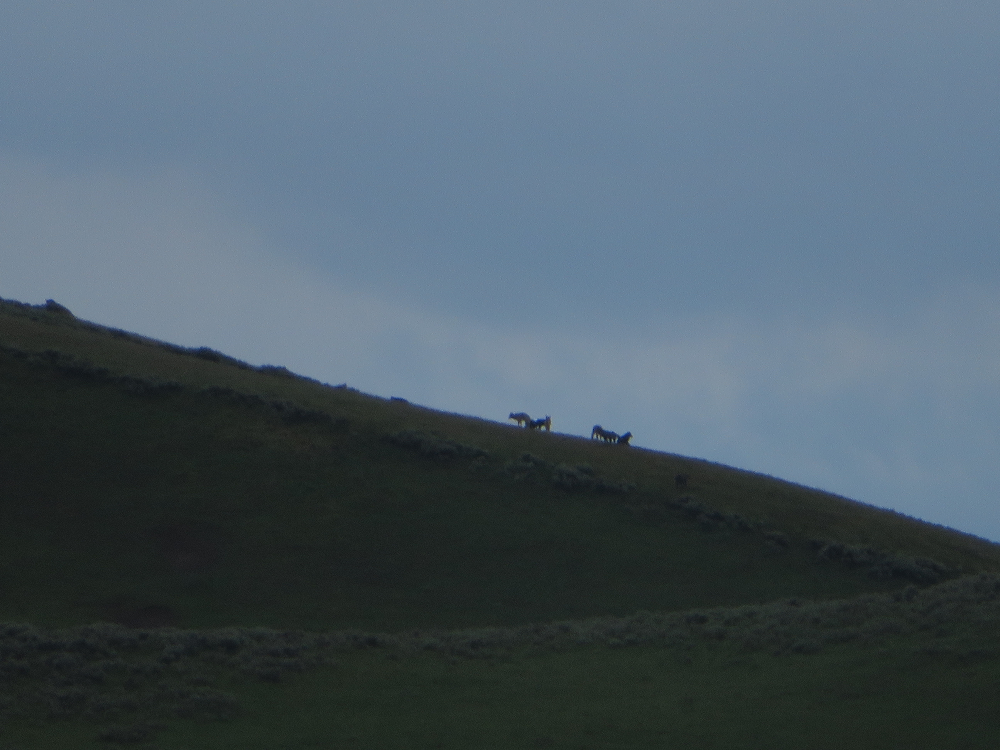
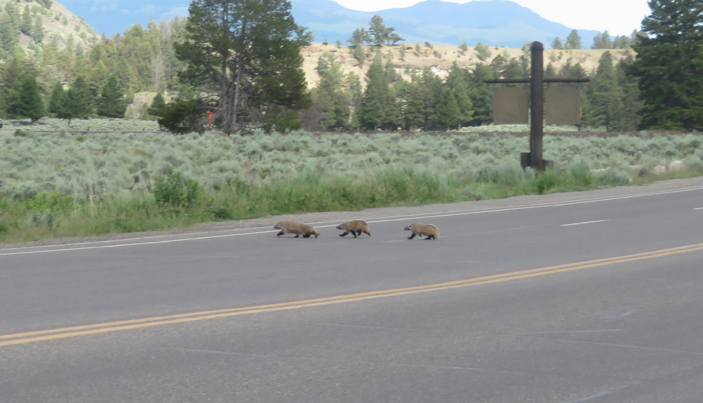

Grand Canyon

Yellowstone Lake

Grizzly Bear
Yellowstone is by far my favorite National Park not just in the United States, but in the entire world. With plenty of awesome scenery and the best wildlife opportunities of any U.S. National Park, there is so much to see and do here and you certainly won't get bored on your visit.
Grand Canyon
Yellowstone Lake
Grizzly Bear
Probably the most iconic Yellowstone attraction has to be its geothermal features. The Old Faithful Geyser Basin is a must visit, centered around the iconic Old Faithful Geyser. On my visit, I got to witness huge eruptions of both Old Faithful and Grand Geyser. Nearby, the Grand Prismatic Spring is equally stunning and one of the most colorful things I've ever seen. Along with hot springs at Mammoth, Norris, and West Thumb on the shores of the Yellowstone Lake, Yellowstone's geothermal areas are epic to see up close.

Eruption of Grand Geyser

Grand Prismatic Spring

Mammoth Hot Springs
The Yellowstone River and Grand Canyon of the Yellowstone is another beautiful place to visit in the park. The river flows north from the shores of Yellowstone Lake, down past the stunning Hayden Valley before carving into the Yellowstone Grand Canyon, which consists of 2 picturesque waterfalls that can easily be accessed from the Canyon Village. There are trails and viewpoints on both the North and South Rim of the canyon, which bring awesome views of the waterfalls as you are surrounded by adorable chipmunks at the gorgeous overlooks. Further downstream from the canyon are even more amazing views of the river as it flows towards the Tower Roosevelt area and into Lamar Valley.

Lower Falls Overlook

Yellowstone River near Tower Falls

Chipmunk at the overlook
My favorite attraction of Yellowstone has to its wildlife, being the best national park in the entire United States to see them. Bears were my favorite creatures here, with both black bears, cinnamon bears (color morph of the black bear), and grizzly bears all calling the park home. Some of my favorite bear and wildlife sightings occured in the park, including a mother grizzly and her adorable tiny cub hanging out in the meadows near Yellowstone Lake, which was simply magical to witness. Other fantastic bear sightings included a Grizzly Bear foraging on the roadside of Hayden Valley, a beautiful Cinnamon Bear at Petrified Tree in the northern part of the park, and countless black bears all over the park, especially in both Hayden Valley and Lamar Valley. On my week-long visit, I got to see over 40 bears total, which was one of the greatest wildlife experiences I've ever had.

Grizzly Bear & Cub, near Yellowstone Lake

Grizzly Bear Cub, near Yellowstone Lake

Grizzly Bear & Cub, near Yellowstone Lake

Large Grizzly Bear, Hayden Valley

Cinnamon Bear, Petrified Tree

Black Bear, Lamar Valley
There are also many Herbivorous animals that can also be found in the wilds of Yellowstone. The most famous of which are Bison, which can be found all over the park, but especially in Lamar and Hayden Valleys where there are huge herds of them roaming in the endless grasslands. Just as abundant are Elk, which I found many herds near Mammoth Hot Springs and along Yellowstone Lake. My favorite herbivore, though, were Moose, the largest deer species in the world, which I got to witness a mother moose and her adorable calf up close on the roadside in the northern part of the park. The most unique creatures in the park are Pronghorn, the fastest land mammal in the Americas reaching up to 60mph at their top speed. They are abundant across the open fields of Lamar Valley, just like the Ground Squirrels of the valley's Trout Lake trail, some of the smallest and cutest animals I got to see in the park.

Bison Calf, Hayden Valley

Bison Herd, Hayden Valley

Elk, Mammoth Hot Springs

Mother Moose & Calf

Pronghorn, Lamar Valley

Pronghorn, Slough Creek

Squirrel, Trout Lake

Squirrel, Trout Lake
Besides bears, Yellowstone is home to a wide range of land carnivores as well. This includes the beautiful Red Fox, which I had the privilege to see in Lamar Valley on the roadside. I also found a ton of Coyotes in the park, in places like Lamar and Hayden Valleys as well as near Mt. Washburn and on the shores of Yellowstone Lake. In Lamar Valley, I even got to see a family of coyote pups and their dens from a distance as well as multiple Coyotes running and foraging on the side of the road. However, the most famous carnivore in Yellowstone are the Wolves, which have been reintroduced to the wild and thriving in the park since 1995. Now, in places like Lamar Valley and Hayden Valley (where I saw them), you have a good chance of seeing a pack of them together especially at dawn and dusk. Badgers are also fairly common here, and I got so lucky to see a entire family of them crossing the road at the Tower Junction area.

Beautiful Fox, Lamar Valley

Coyote, Hayden Valley

Gray Wolves, Hayden Valley

Badgers, Tower Junction
Yellowstone is also home to a wide range of birds. Some birding highlights include many Bald Eagles, including one feasting on a Marmot it caught earlier on the shores of Yellowstone Lake. Waterfowl like Canada Geese and Green Winged Teals are also common, and I got to see a wide variety of waterbirds in Hayden Valley near the Yellowstone River. Finally, Golden Eagles are abundant too, and I even got to see a family of Golden Eagles nesting in the cliffs above Lamar Valley.

Bald Eagle, Yellowstone Lake

Green Winged Teal, Yellowstone River

Golden Eagle, Slough Creek